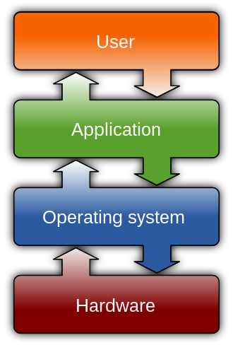

2 A Toy Operating System
2.1 What is an OS?

An OS is the software that acts as an intermediate layer between computer hardware and user programs. The OS’s job is to provide common services to users, such as running programs and reading/writing to files.
Most computers "run" operating systems because they are an essential abstraction over the computer hardware. Computer users (mostly) shouldn’t have to think about the physical device when reading from a file, for example.
2.1.1 OS as an API
An OS is an interface. The functions in the OS’s interface are known as system calls. At the lowest level, system calls are invoked by executing special instructions. At a higher level, operating systems ship with a C implementation, which provide a more user-friendly API for system calls.
2.1.1.1 System Calls
Below is an example of an x86-64 program that prints Hello, world! on the standard output stream. The program invokes the write Linux system call.
0 .global main 1 2 .text 3 main: 4 mov $1, %rax 5 mov $1, %rdi 6 lea message(%rip), %rsi 7 mov $14, %rdx 8 syscall 9 10 .data 11 message: 12 .asciz "Hello, world!\n"
On line 8, the syscall instruction is executed. The CPU then switches to kernel mode and begins executing a kernel function.
Lines 4-7 set up the system call, specifying which system call should be executed and passing the arguments. The syscall instruction expects the %rax to contain a system call number. The write system call has the system call number 1. Since write is invoked, the syscall instruction expects the file descriptor to write to, a pointer to the buffer to read from, and the number of bytes to write, which are stored in %rdi, %rsi, and %rdx, respectively.
2.1.1.2 POSIX
The code snippet above is tightly coupled with Linux. It relies on implementation details of the Linux kernel. Namely, the fact that the write system call exists. The snippet above would certainly fail with a microkernel implementation, since file system operations are typically not system calls and instead are satisfied by servers running in user space.
In order to achieve program compatibility on different operating systems, most operating systems implement a C API as defined by the POSIX specification.
There is an important distinction here—POSIX does not require operating systems to implement certain system calls. As mentioned earlier, that would mean microkernel implementations could never be POSIX-compliant. Instead, POSIX defines the C API, which represent high-level pieces of functionality that all operating systems should support.
Here is the write C function as defined by POSIX.
ssize_t write(int fd, const void *buf, size_t count);
The GNU C Library (glibc) is an implementation of the POSIX C API for Linux-based systems. The glibc implementation of the write function will be a simple wrapper over the corresponding write system call. However, an OS with a microkernel will implement the write C function with a function call to a userspace file system server.
2.1.1.3 System Calls Are Everywhere!
Below, the cat program is called with the file "the-real-motivation.txt". We use the common Linux utility strace to trace the system calls that cat invokes. As expected, cat invokes the read system call, to read the contents of "the-real-motivation.txt" from the file system.
1 [lukejianu@login-students ~]$ strace cat the-real-motivation.txt 2 ... 3 read(3, "We are attempting to build a lar"..., 131072) = 84 4 We are attempting to build a large scale system ... without writing any unit tests. 5 ... 6 +++ exited with 0 +++
The third line shows strace logging the system call, and the fourth line shows the output from cat.
2.1.2 OS Functionality
The POSIX C API provides a relatively clear idea of the functionality most operating systems should provide. Namely, we think there are 3 major pieces of functionality: process, memory, and file management.
TODO: This section sucks less?
2.1.2.1 Process Management
Users want to run programs. An instance of a running program is called a process. Thus, an OS must support process creation—loading a program from the file system into memory and initiating instruction execution.
Users also want to run multiple programs at the same time, even on single core machines. This is accomplished by virtualizing the CPU. If the CPU switches between running many processes quickly, it provides the illusion that they all execute at once.
Since many processes can run at once on a single CPU, the OS must decide who gets the CPU and for how long. This is the job of the scheduler.
2.1.2.2 Memory Management
Memory stores information for immediate use by the CPU. The OS must provide processes with a way to request and return memory. Thus, the OS must track which blocks of memory are taken and which blocks are free.
2.1.2.3 File Management
Users want to create files, write to files, read from files, etc. Typically, these operations are implemented in the component known as the file system.
TODO: Are file descriptors part of the file system?
Unix-like operating systems also define the notion of a file descriptor. To quote the xv6 paper, "a file descriptor is a small integer representing a kernel-managed object that a process may read from or write to".
Examples of the aforementioned kernel-managed objects include files but also pipes, which are communication channels and a primary mechanism used for inter-process communication.
The file descriptor interface provides a powerful abstraction similar to the Readable and Appendable interfaces in the Java programming language. The core idea being that all file descriptors are pointers to streams of bytes that can either be read from or written (appended) to.